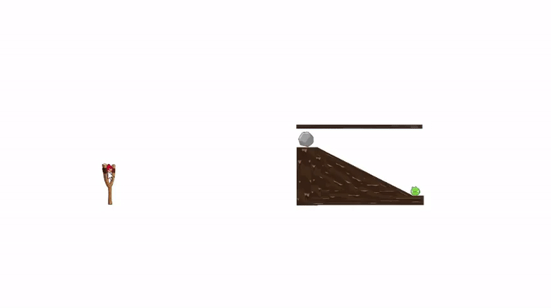
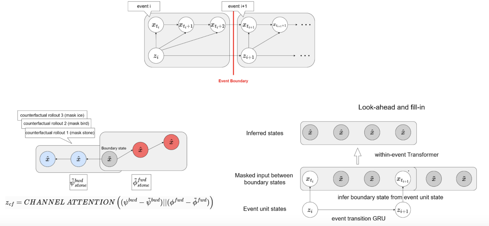
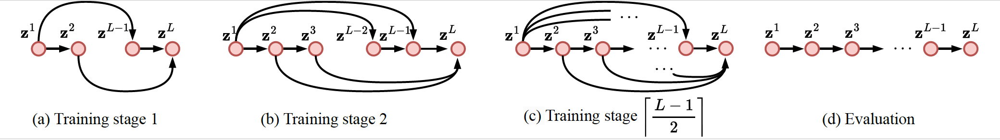
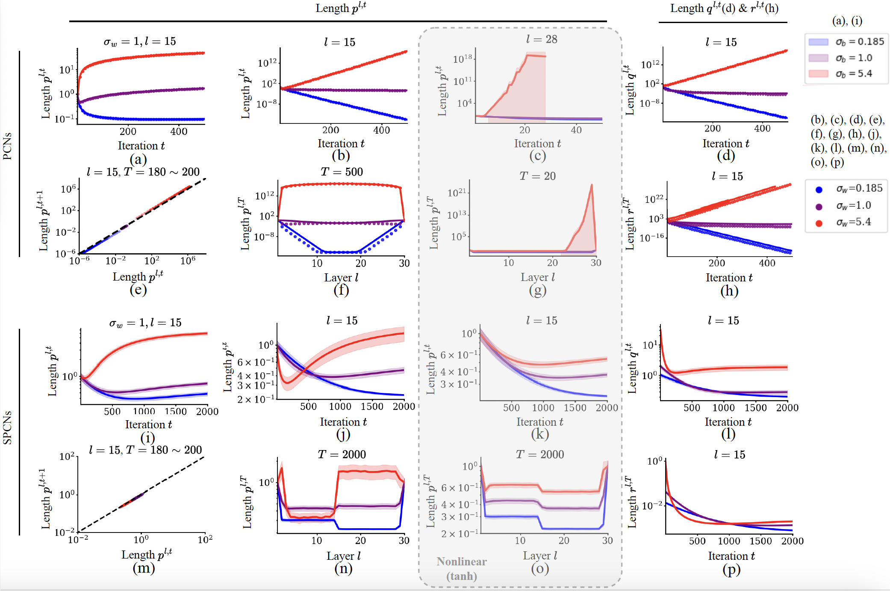
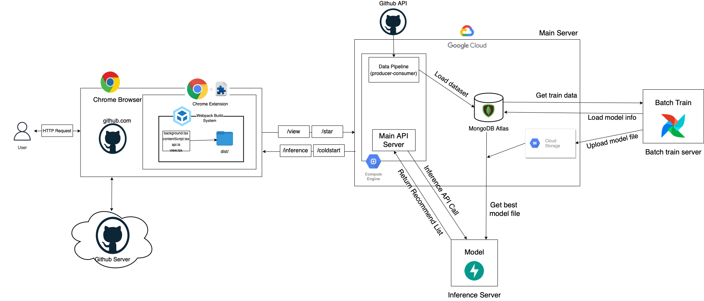

|
Youngha Jo
I am graduated as Master in Brain and Machine Intelligence Lab (BML) at KAIST, advised by Sang Wan Lee.
Before joining KAIST, I spent a semester taking a recommender system course from Boostcamp held by Naver Connect.
Also, I received B.S. degree on majoring in Electrical and Electronic Engineering, and minoring in Psychology from Yonsei University.
During undegraduate, I had a chance to work as an undergraduate research assistant in Computational Clinical Science
and advised by Woo-Young Ahn. I was also advised by Sang Hoon Han for leading the undergraduate study club CogSci::IN.
CV /
Github /
Email /
전공요약발표자료
Skills & Tools
- Programming Languages: Python (Advanced), JavaScript (Novice), C#, C++ (Beginner)
- Machine Learning: PyTorch (Advanced), Tensorflow (Intermediate)
- Game Development: Unity (Intermediate)
- Data Engineering: SQL, MongoDB, Google Firebase (Novice)
English Proficiency
- OPIc: Intermediate High (2025.01.31)
- TEPS: 2+ (2021.10.02)
|
|
|
Research
I'm interested in building AI systems that mimic and analyze human cognition,
with the belief that this framework can be scaled to interpret complex real-world phenomena.
To this end, I focus on designing deep learning models that learn causal and hierarchical structures of the environment, much like humans do.
Additionally, I design novel experiments to study human cognition, gaining insights that inform and enhance AI development.
|
Event Unit Prediction Research (23.07~24.12)

Human Experiment Platform:
Built a Unity WebGL-based interactive experiment platform to collect human prediction data.
Integrated Google Firebase for real-time data storage and analysis.
Designed tasks where participants predict events in a physics-based environment (Angry Birds).
Check online experiment link to conduct it by yourself!

Hierarchical Video Prediction Model: A model that predicts future frames in a video by learning hierarchical structures.
Designed a temporal abastraction model that incorporates causal inference & event-based representation.
Demonstrated AI’s ability to simulate human-like event anticipation.
|
Stable Predictive Coding Network Research (24.03~)


SPCN: Investigated stability issues in Predictive Coding Networks (PCN) and proposed a novel Stable Predictive Coding Network (SPCN).
Conducted experiments to analyze instability factors in PCN, identifying key failure points.
Designed a new architecture that stabilizes learning in PCN (SPCN), and showed improved performance in various tasks.
Code is currently private, but will be released after the paper is accepted.
|
Publications
Jo, Y., Lee, S. W. (2025). Designing a Platform and Algorithm for Event-Cognitive Unit Prediction Experiments. Patent pending.
Ha, M., Sung, Y., Jo, Y. (2025). Towards Stable Learning in Predictive Coding Networks. International Joint Conference on Artificial Intelligence (IJCAI), under second review.
|
Projects
Github Repository Recommendation Project (22.05~22.06)

Github Repository Recommendation Service:
Built a personalized recommendation engine for GitHub repositories.
Users struggle to find relevant repositories due to GitHub's vast dataset.
Developed a Node.js-based REST API using MongoDB and machine learning ranking algorithms.
Mitigated cold-start issues with hybrid recommendation models.
|
|
{kind=link}
{kind=link}
{kind=link}
{kind=link}
{kind=link}
{kind=link}